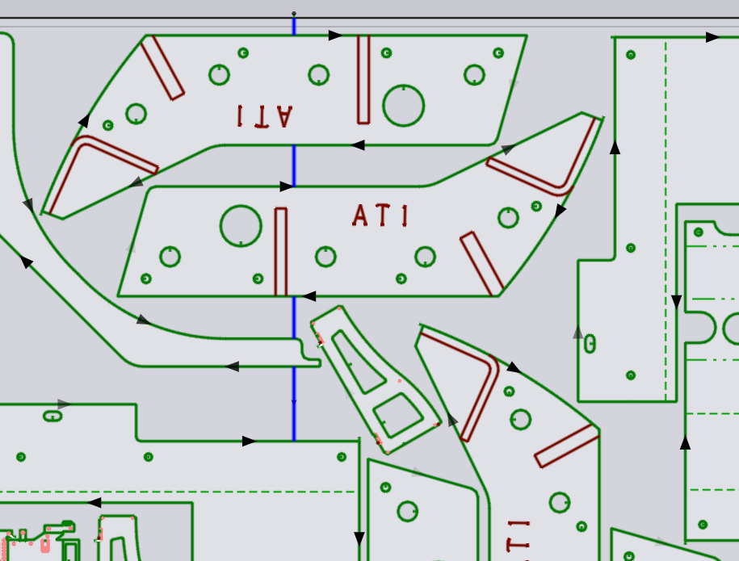

Krájení plechu
Pokud je plech pouze částečně optimálně rozmístěný, můžete přidat SliceLine pro odříznutí nepoužité obdélníkové části plechu, která může být použita jako surový materiál pro budoucí optimální rozmístění. Stránku Řezy skeletu nastavení TecZone lze použít ke konfiguraci automatického vytváření krájení plechů, pokud zbývá dostatek zbytku plechu.
Krájení plechů z panelu Rozvržení
Můžete také ručně přidat krájení plechu z panelu Layout. Chcete-li tento panel zobrazit, klikněte v blízkosti okraje plechu. Alternativně můžete kliknout na libovolný díl, čímž otevřete panel Umístění, a poté kliknout na tlačítko Layout navigace.

Obrázek výše ukazuje kroky pro ruční přidání krájení plechu.
-
Klikněte blízko okraje, aby se otevřel panel Layout.
-
Kliknutím na tlačítko Insert sheet cut přepnete do režimu řezání plechů.
-
Klikněte na okraj plechu a poté pomocí vodorovného nebo svislého úchytu nakreslete přesnou vodorovnou nebo svislou čáru. Tuto čáru nemusíte prodlužovat až k druhému okraji plechu – když kliknete znovu, čára se automaticky prodlouží a vytvoří se řez přes celý plech.
Stejnou funkci můžete použít také k přidání Skeleton cuts. Stačí nakreslit čáru a automaticky se rozdělí na segmenty, přičemž se vyřízne pouze skelet plechu, který zůstane po vyříznutí všech dílů:

Úprava krájecích řezů
Kliknutím na krájecí řez můžete otevřít editor Slice Line:

-
Klikněte na čáru řezu a přetáhněte ji na nové místo. Můžete ji také přetáhnout za díly a hranice čáry s díly na rozvržení budou automaticky přepočítány.
-
Kliknutím na Flip direction otočíte směr, nebo na Delete odstraníte čáru krájení.
-
Kliknutím na Segments provedete podrobnější úpravy čáry krájení.
-
Použijte Condition a Pierce pro výběr řezné podmínky a typu zápichu.
-
Při zahájení nebo dokončení řezu v blízkosti okraje plechu je důležité nastavit výškový senzor laserové hlavy. Obvykle se měření provádí v bodě několik mm uvnitř plechu (na obrázku výše označeno červeným křížkem) a je označeno parametrem Measure. Poté se výška hlavy zafixuje, posune se na místo zápichu a poté se vrátí do měřicího bodu bez zapojeného senzoru výšky, než pokračuje v řezání.
-
Nastavení Overtravel určují, o kolik se krájecí řez plechu prodlouží za hranice plechu nahoře a dole.
-
Nastavení Sheet web vytvoří mikrospoj o zadané velikosti v horní a dolní části plechu.
-
Part web je mikrospoj vytvořený mezi čárou krájení a hranicí jakéhokoli existujícího dílu.
-
Pierce distance je vzdálenost bodů zápichu od okraje dílu. K zápichu dochází v této vzdálenosti od dílu, poté se tryska přiblíží k dílu, až se nachází ve vzdálenosti ui:EGTag.SliceJointGapPart[Part web] od dílu, poté provede otočku o 180 stupňů a pokračuje v řezání.